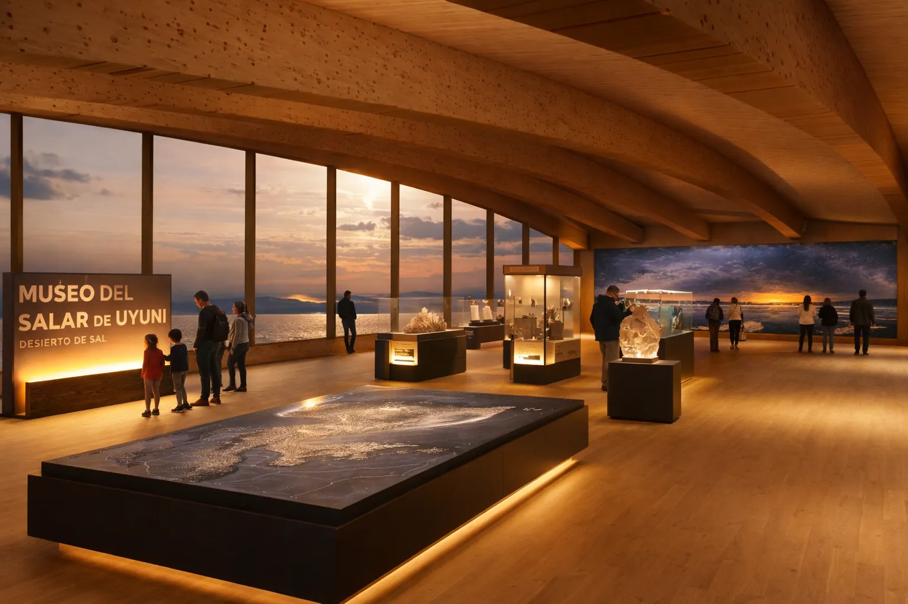
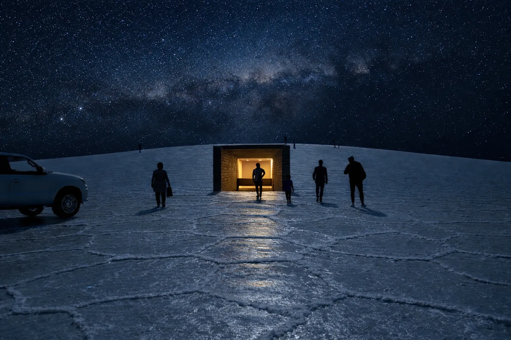

- Tipo
- Arquitectura conceptual
- Ubicación
- Salar de Uyuni, Bolivia
- Año
- 2026
- Superficie
- 500 m²
- Estado
- Propuesta de concurso
- Proceso
-
- Idea
- Transformación
- Materia
Idea
THE REFRACTION nace de una reflexión sobre la manera en que experimentamos el mundo contemporáneo. Habitamos una realidad dominada por las apariencias, donde las experiencias se consumen a través de imágenes, representaciones e identidades construidas. Nos hemos acostumbrado a observar desde la comodidad de lo conocido, sin cuestionar aquello que existe más allá de la superficie.
La propuesta encuentra su origen en esta contradicción: vivimos rodeados de posibilidades para observar el mundo, pero cada vez encontramos menos oportunidades para experimentarlo verdaderamente.
Situado en el Salar de Uyuni, Bolivia, el proyecto aprovecha una de las condiciones naturales más extraordinarias del paisaje: la transformación estacional de su superficie en un inmenso espejo que refleja el cielo, las nubes y las estrellas, desdibujando los límites entre la tierra y el firmamento.
Frente al planteamiento convencional de una torre de observación, THE REFRACTION propone una operación arquitectónica inversa. En lugar de elevar una estructura ajena al territorio, imagina una incisión sobre el salar y el levantamiento de una porción de su superficie, como si el propio paisaje se desprendiera de la tierra para convertirse en arquitectura.
Esta intervención genera dos experiencias complementarias. Bajo la superficie elevada, una galería expositiva dedicada al salar representa el mundo del conocimiento mediado: aquello que observamos, interpretamos y consumimos a través de una representación. Sobre ella, un mirador abierto enfrenta al visitante con la inmensidad del paisaje real, sin intermediarios.
El uso de vigas de madera, acero, vidrio y concreto aparente permite concebir una estructura contemporánea que contrasta con la aparente continuidad natural del terreno. El revestimiento superior, compuesto por material del propio salar, refuerza la intención de desdibujar los límites entre arquitectura y paisaje.
El recorrido plantea así una transición entre la contemplación de una realidad representada y el encuentro directo con la naturaleza.
THE REFRACTION cuestiona los límites entre observar y experimentar, entre conocer una imagen y habitar aquello que representa. Una arquitectura que no busca imponerse sobre el paisaje, sino utilizarlo para provocar una reflexión sobre nuestra propia manera de mirar.



Proceso
El proyecto surge como respuesta al concurso internacional Observation Tower, organizado por Archibest, cuya convocatoria proponía imaginar una torre de observación en cualquier lugar del planeta.
La libertad del planteamiento se convirtió en el primer desafío. Sin un emplazamiento predeterminado, un programa arquitectónico convencional o las necesidades específicas de un cliente, el proceso comenzó con una pregunta fundamental: ¿qué lugar del mundo merece ser observado y de qué manera debería intervenir la arquitectura para hacerlo posible?
La elección del Salar de Uyuni permitió desarrollar una propuesta en la que el paisaje no fuera únicamente el escenario de la intervención, sino su principal argumento conceptual.
La decisión de sustituir la torre vertical por una elevación del propio terreno transformó la idea tradicional del observatorio. La arquitectura dejó de entenderse como un objeto desde el cual mirar para convertirse en un recorrido capaz de revelar distintas dimensiones del territorio.
La galería inferior y el mirador superior establecen una relación entre lo contenido y lo ilimitado, lo representado y lo real. La intervención propone experimentar el salar desde perspectivas distintas: por dentro, por fuera, por debajo y por encima de su superficie.
La propuesta recibió una mención honorífica en el concurso Observation Tower de Archibest, reconocimiento que forma parte de la trayectoria de exploración arquitectónica de ARQUEMIST.
Ficha técnica
- Tipo
- Arquitectura conceptual / Concurso internacional / Mirador y espacio expositivo
- Concurso
- Observation Tower — Archibest
- Reconocimiento
- Mención honorífica
- Estado
- Propuesta conceptual de concurso, no ejecutada
- Superficie
- Aproximadamente 500 m² de superficie total
- Materiales
- Vigas de madera, vidrio, acero, concreto aparente y revestimiento superior con material del propio salar.
- Imágenes
- Visualizaciones arquitectónicas digitales, láminas de concurso y diagramas conceptuales.
- Reconocimiento documental
- Diploma digital de mención honorífica otorgado por Archibest.
- Créditos
- ARQUEMIST.

«No basta con mirar el mundo. Hay que atreverse a experimentarlo».